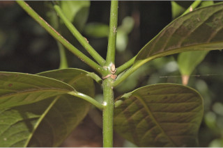
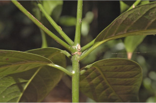
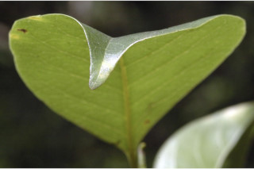
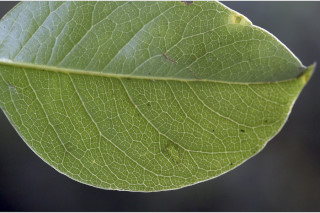
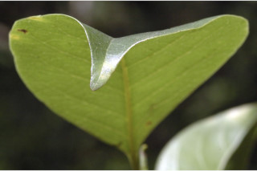
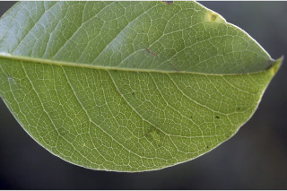

Trees up to 25 m tall.
25 ಮೀ.ವರೆವಿಗೆ ಬೆಳೆಯುವ ಮರಗಳು.
25 മീറ്റര് വരെ ഉയരമുളള മരങ്ങള്.
மரங்கள் 25 மீ. உயரம் வரை வளரக்கூடியது.
Bark brown, smooth; blaze brown.
ತೊಗಟೆ ಕಂದು ಬಣ್ಣದಲ್ಲಿರುತ್ತದೆ;ಕಚ್ಚು ಮಾಡಿದ ಜಾಗ ಕಂದು ಬಣ್ಣದಲ್ಲಿರುತ್ತದೆ.
മിനുസമായ, തവിട്ട് പുറംതൊലി; വെട്ട്പാടിന് തവിട്ട് നിറം.
மரத்தின் பட்டை ப்ரவுன் நிறமானது, வழுவழுப்பானது; உள்பட்டை ப்ரவுன் நிறமானது.
Branchlets terete, glabrous; apical buds elongated protected with lanceolate scales.
ಕಿರುಕೊಂಬೆಗಳು ದುಂಡಾಗಿದ್ದು ರೋಮರಹಿತವಾಗಿರುತ್ತವೆ;ಅಗ್ರದಲ್ಲಿನ ಅಂಕುರಗಳು ಉದ್ದವಾಗಿರುತ್ತವೆ ಮತ್ತು ಭರ್ಜಿಯಾಕಾರದ ಶಲ್ಕೆಗಳಿಂದ ರಕ್ಷಿತವಾಗಿರುತ್ತವೆ.
അരോമിലമായ, ഉരുണ്ട ഉപശാഖകള്; കുന്താകാര ശല്ക്കങ്ങളാല് സുരക്ഷിതമാക്കപ്പെട്ട നീളമേറിയ അഗ്രമുകുളങ്ങള്.
சிறிய நுனிக்கிளைகள் குறுக்குவெட்டுத் தோற்றத்தில் வளையமானது, உரோமங்களற்றது; தண்டின் நுனியிலுள்ள மொட்டு நீண்டது மற்றும் அது ஈட்டி வடிவ செதில்களால் முடியிருக்கும்.
Leaves simple, alternate, spiral to opposite or subopposite, clustered at twig ends; petiole 0.5-1.8 cm long, slightly canaliculate; lamina 5-13 x 2.5-6 cm, elliptic to narrow elliptic, apex acuminate, often acumen twisted, base acute to cuneate, margin entire, glabrous, shining, aromatic when squeeze; midrib slightly canaliculate; secondary_nerves 7-12 pairs, branched, relatively acute in angle; tertiary_nerves strongly reticulate.
ಎಲೆಗಳು ಸರಳವಾಗಿದ್ದು,ಪರ್ಯಾಯ ಮತ್ತು ಸುತ್ತು ಜೋಡನಾ ವ್ಯವಸ್ಥೆಯಲ್ಲಿನ ಮಾದರಿಯಿಂದ ಅಭಿಮುಖ ಅಥವಾ ಕೆಲವು ವೇಳೆ ಉಪ-ಅಭಿಮುಖ ಮಾದರಿಯಲ್ಲಿರುತ್ತವೆ ಮತ್ತು ಕುಡಿಕೊಂಬೆಗಳ ತುದಿಯಲ್ಲಿರುತ್ತವೆ; ತೊಟ್ಟುಗಳು 0.5-1.8 ಸೆಂ.ಮೀ. ವರೆಗಿನ ಉದ್ದವಿದ್ದು ಸ್ವಲ್ಪ ಮಟ್ಟಿಗೆ ಕಾಲುವೆಗೆರೆಯನ್ನು ಹೊಂದಿರುತ್ತವೆ ;ಪತ್ರಗಳು 5-13 x 2.5-6 ಸೆಂ.ಮೀ ಗಾತ್ರ ಹೊಂದಿದ್ದು ಅಂಡವೃತ್ತದಿಂದ ಸಂಕುಚಿತ ಅಂಡವೃತ್ತದವರೆಗಿನ ಆಕಾದಲ್ಲಿರುತ್ತವೆ. ಪತ್ರದ ತುದಿ ಕ್ರಮೇಣ ಚೂಪಾಗುವ ಮಾದರಿಯಲ್ಲಿರುತ್ತದೆ ಮತ್ತು ಹಲವು ವೇಳೆ ಅಗ್ರ ತಿರುಚಿಕೊಂಡಿರುತ್ತದೆ;ಬುಡ ಚೂಪಾದುದರಿಂದ ಬೆಣೆಯಾಕಾರದ ಮಾದರಿಯನ್ನು ಹೊಂದಿರುತ್ತದೆ;ಅಂಚು ನಯವಾಗಿರುತ್ತದೆ;ಪತ್ರಗಳ ಮೇಲ್ಮೈ ಹೊಳಪನ್ನು ಹೊಂದಿ ರೋಮರಹಿತವಾಗಿರುತ್ತದೆ; ಹಿಂಡಿದಾಗ ಪತ್ರಗಳು ಸುವಾಸನೆ ಯನ್ನು ಬೀರುತ್ತದೆ;ಎರಡನೇ ದರ್ಜೆಯ ನಾಳಗಳು 7-12 ಜೋಡಿಗಳಿದ್ದು ಕವಲೊಡೆದಿರುತ್ತವೆ ಮತ್ತು ಹೆಚ್ಚೂ ಕಡಿಮೆ ತೀಕ್ಷ್ಣವಾದ ಕೋನ ಹೊಂದಿರುತ್ತವೆ. ಮೂರನೇ ದರ್ಜೆಯ ನಾಳಗಳು ದೃಢವಾದ ಜಾಲಬಂಧ ನಾಳ ವಿನ್ಯಾಸ ಹೊಂದಿರುತ್ತವೆ.
ലഘുവായ ഇലകള്, ഏകാന്തര ക്രമത്തില്, സര്പ്പിളംതൊട്ട് സമ്മുഖമോ ഉപസമ്മുഖമോ ആയ വിധത്തില്, തണ്ടുകളുടെ അറ്റത്ത് കൂട്ടമായടുക്കിയതാണ്; ചെറിയ ചാലുളള, ഇലഞെട്ടിന് 0.5 സെ.മീ മുതല് 1.8 സെ.മീ വരെ നീളം; പത്രഫലകത്തിന് 5 സെ.മീ മുതല് 13 സെ.മീ വരെ നീളം, 2.5 സെ.മീ മുതല് 6 സെ.മീ വരെ വീതിയും, ആകൃതി ദീര്ഘവൃത്താകാരം തൊട്ട് വീതികുറഞ്ഞ ദീര്ഘവൃത്താകാരം വരെയാകാം, പത്രാഗ്രം ദീര്ഘമാണ്, പത്രാഗ്രം മിക്കവാറും വളഞ്ഞിരിക്കുന്നതാണ്, പത്രാധാരം നിശിതാഗ്രം തൊട്ട് ആപ്പാകാരം വരെയാകാം, അരികുകള് അവിഭജിതമാണ്, അരോമിലം, തിളങ്ങുന്നതാണ്, ഞെരടുമ്പോള് സുഗന്ധമുളളതാണ്; മുഖ്യസിര ചെറുതായി ചാലുളളതാണ്; താരതമ്യേന നിശിതാഗ്രത്തിലുളള, ശാഖിതമായ 7 മുതല് 12 വരെ ജോഡി ദ്വീതീയ ഞരമ്പുകള്; ത്രിതീയ ഞരമ്പുകള് കനത്തില് ജാലിതമാണ്.
இலைகள் தனித்தவை, மாற்றுஅடுக்கமானவை, சுழல் போன்று அமைந்தவை முதல் எதிரடுக்கமானது முதல் கிட்டதட்ட எதிரடுக்கமானது, தண்டின் நுனியில் இலைகள் கூட்டமாக மற்றும் நெருக்கமாக அமைந்தவை; இலைக்காம்பு 0.5-1.8 செ.மீ. நீளமானது, குறுக்குவெட்டுத் தோற்றத்தில் கேனாலிகுலேட்; இலை அலகு 5-13 X 2.5-6 செ.மீ., நீள்வட்டம் முதல் குறுகிய நீள்வட்ட வடிவானது, அலகின் நுனி அதிக்கூரியது, முனை திருகியது, அலகின் தளம் கூரியது முதல் ஆப்பு வடிவானது, அலகின் விளிம்பு முழுமையானது, அலகின் கீழ்பரப்பு உரோமங்களற்றது, மேற்பரப்பு பளபளப்பானது, அலகு பிழியப்படும் போது நறுமணமிக்கது; மையநரம்பு மேற்பரப்பில் அலகின் பரப்பைவிட பள்ளமானது; இரண்டாம் நிலை நரம்புகள் 7-12 ஜோடிகள், கிளைத்தவை, குறுகிய கோணங்களுடையது; மூன்றாம் நிலை நரம்புகள் வலைப்பின்னல் போன்றது.
Inflorescence axillary and subterminal panicle, glabrous.
ಹೂಗಳು ಅಕ್ಷಾಕಂಕುಳಿನಲ್ಲಿನ ಮತ್ತು ಉಪ-ತುದಿಯಲ್ಲಿನ ಪುನರಾವೃತ್ತಿಯಾಗಿ ಕವಲೊಡೆಯುವ ಮಾದರಿಯಲ್ಲಿದ್ದು ರೋಮರಹಿತವಾಗಿರುತ್ತವೆ.
പൂങ്കുലകള്, അരോമിലമായ കക്ഷീയമോ ഉപഉച്ഛസ്ഥമോ ആയ പാനിക്കിളുകളാണ്.
மஞ்சரி இலைக்கோணங்களில் மற்றும் தண்டின் நுனியிலுள்ள பேனிக்கிள், உரோமங்களற்றது.
Berry, ellipsoid, 2 cm long; fruiting_perianth_lobes caducous ; seed 1.
ಬೆರ್ರಿಗಳು ಅಂಡವೃತ್ತಾಕಾರದಲ್ಲಿದ್ದು 2 ಸೆಂಮೀ. ಉದ್ದವನ್ನು ಹೊಂದಿರುತ್ತವೆ; ಕಾಯಿಗಳ ಪುಷ್ಪಾವರಣದ ದಳಗಳು ಉದುರಿ ಹೋಗುತ್ತವೆ.
ഒറ്റവിത്തുളള കായ, 2 സെ.മീ നീളമുളള, ദീര്ഘ ഗോളാകാര ബെറിയാണ്; പരിദളഭാഗങ്ങള് എളുപ്പം കൊഴിഞ്ഞ് വീഴുന്നവയാണ്.
முழுச்சதைகனி (பெர்ரி), நீள்வட்ட வடிவானது, 2 செ.மீ. நீளமானது; ப்பீரியான்ந்த் இதழ்கள் எளிதில் உதிருபவை; விதை ஒன்றுடையது.


 



 


